CUIDANDO AL
FUTBOLISTA DEL MAÑANA
Conoce cuales son las lesiones mas comunes que sufre los jovenes futbolistas como autoidentificarlas de forma basica, como prevenir estas lesiones y cómo tratarlas de manera sencilla.
Lesiones en el fútbol: Guía informativa de reconocimiento y cuidado inicial
Esta página está pensada para ayudarte a conocer las lesiones más comunes en el fútbol y entender, de manera básica, cómo se producen. El objetivo principal es facilitar la identificación de síntomas generales que pueden indicar una posible lesión durante entrenamientos o partidos. Además de que encontrarás recomendaciones simples para el cuidado inicial y la prevención de lesiones, con el objetivo de tener una práctica deportiva responsable obviamente sin reemplazar la opinión de un profesional de la salud.
Objetivo General
Diseñar una página web que organice y presente información clara sobre las lesiones más comunes en el fútbol, para que los jugadores puedan entender su manejo básico.
Problema
Muchos jóvenes futbolistas no tienen el conocimiento necesario para reconocer lesiones comunes ni saber cómo reaccionar ante ellas.
Objetivos Específicos
- Identificar las lesiones más comunes en el fútbol juvenil
- Explicar síntomas de forma sencilla
- Crear una página web accesible y fácil de entender
- Evaluar si los usuarios comprenden la información
Público Objetivo
Jóvenes futbolistas, en especial jovenes del Colegio ANAN que buscan entender mejor las lesiones deportivas y cómo prevenirlas, de manera sencilla.
Esguince de tobillo
El esguince de tobillo es una lesión que ocurre cuando los ligamentos que sostienen el tobillo se estiran demasiado o se rompen.
Suele pasar al girar el pie de forma brusca. En el fútbol esto suele suceder especialemnte al caer mal después de un salto o al cambiar de dirección rápidamente durante el juego.
Es una de las lesiones más comunes en el fútbol debido a la intensidad del deporte y los movimientos constantes.
Síntomas
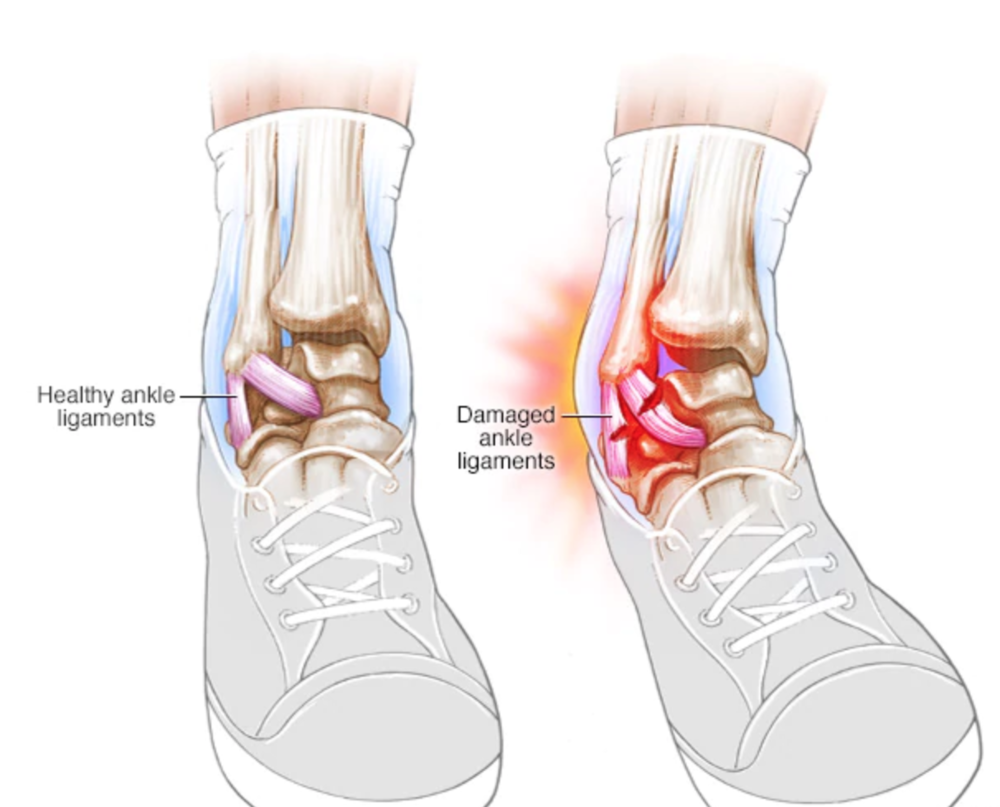
Tipos de esguince
Existen tres grados de esguince de tobillo:
Grado 1 (leve)
El esguince de grado 1 es una lesión leve en la que el ligamento se estira sin llegar a romperse. Produce dolor leve,
poca inflamación y generalmente permite caminar sin mucha dificultad.
Grado 2 (moderado)
El esguince de grado 2 es un desgarro parcial del ligamento. Produce dolor moderado,
hinchazón más visible y dificultad para apoyar el pie o caminar.
Grado 3 (grave)
El esguince de grado 3 ocurre cuando el ligamento se rompe completamente. Provoca dolor intenso,
mucha inflamación, inestabilidad en el tobillo y en muchos casos imposibilidad para moverte.
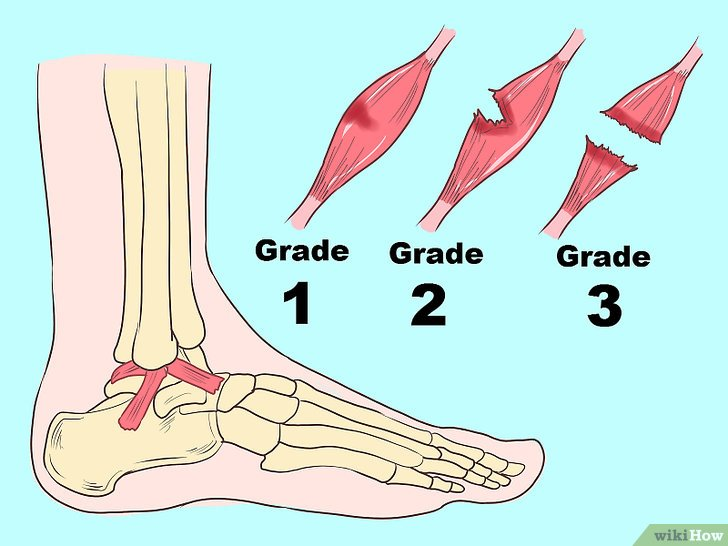
Prevención
Tratamiento inicial
Estos cuidados te pueden ayudar en los primeros momentos, pero no reemplazan la valoración de un médico,
especialmente si el dolor es fuerte o no puedes caminar.
Método (RICE)
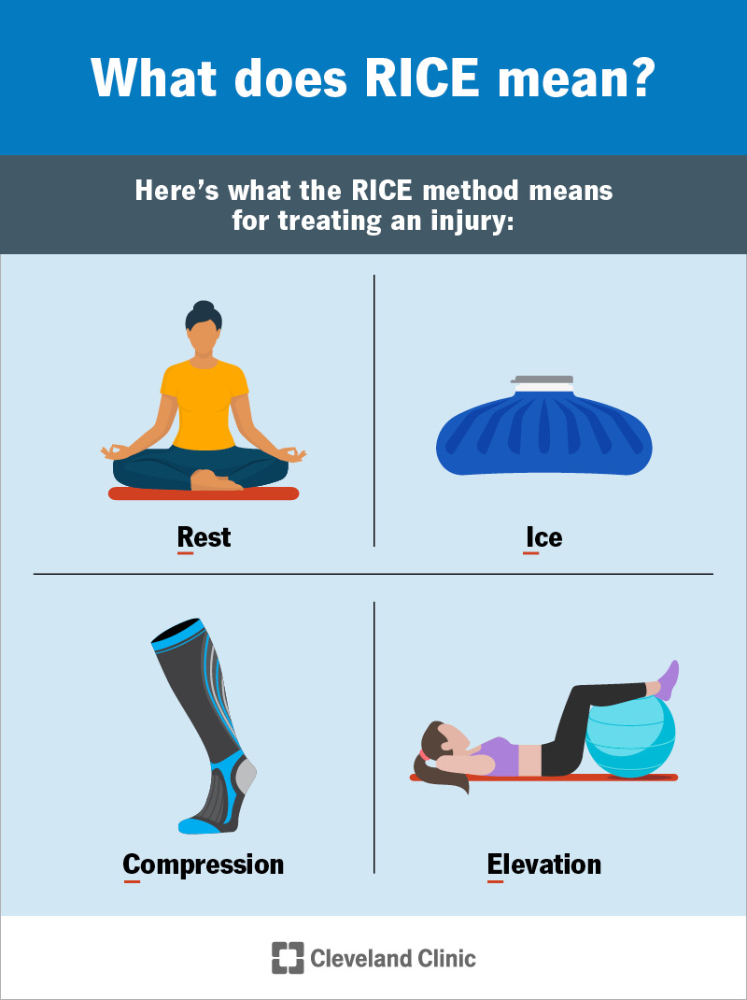
Medicación
Los medicamentos pueden ayudar a aliviar el dolor y la inflamación. Se pueden usar analgésicos o antiinflamatorios como Ibuprofeno, Naproxeno pero solo si es necesario. No tome más que la cantidad recomendada en el envase o más que lo que tu proveedor te aconseje tomar, pero si el dolor no mejora, se debe consultar a un médico.
Desgarre de isquiotibiales
El desgarre de isquiotibiales es una lesión que ocurre cuando las fibras de un músculo ubicados en la parte posterior del muslo se rompen o se estiran demasiado.
Esta lesión causa dolor, inflamación y dificultad para mover la pierna. En el fútbol es muy común, ya que estos músculos trabajan intensamente al correr, frenar y cambiar de dirección.
¿Porque puede ocurrir?
Suele producirse durante acciones explosivas como correr a máxima velocidad, hacer cambios bruscos de dirección o intentar alcanzar el balón rápidamente. También puede aparecer por falta de calentamiento o fatiga muscular.
Síntomas
Los síntomas pueden aparecer en el momento de la lesión o desarrollarse con el paso de las horas.
En algunos casos, el dolor inicial puede disminuir, pero luego aparecen inflamación,
moretones o dificultad para moverse.
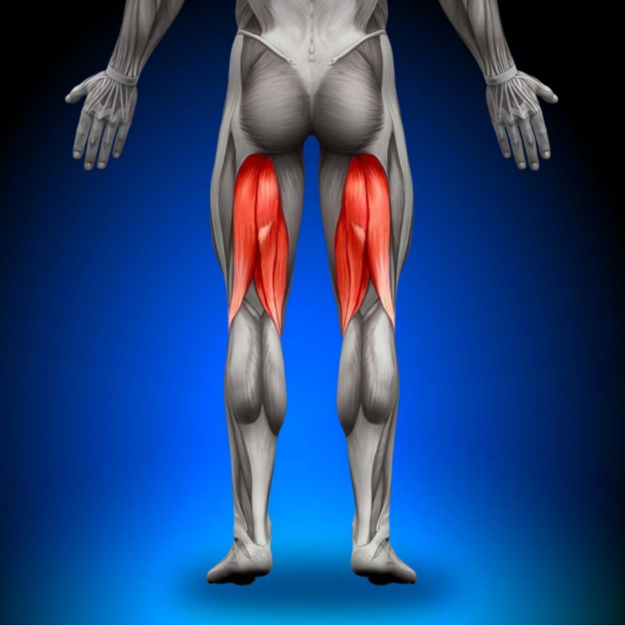
Tipos de desgarre
La gravedad del desgarro muscular se determina mediante
una evaluación médica,
la cual permite identificar el nivel de daño en el músculo.
Existen tres grados de desgarro de isquiotibiales:
Grado 1 (leve)
El desgarro de isquiotibiales grado 1 se trata de una distensión leve.
Es posible que experimentes cierto dolor al utilizar la pierna, pero será leve y habrá una hinchazón mínima.
Grado 2 (moderado)
El desgarro de isquiotibiales grado 2 se trata de un desgarro parcial de uno o más de los músculos isquiotibiales,
es posible que sientas un dolor más intenso y dificultad para moverse. Ademas de que puede haber hinchazón y hematomas, así como cierta pérdida de fuerza.
Grado 3 (grave)
El desgarro de isquiotibiales grado 3 ocurre cuando uno o más de los músculos isquiotibiales se rompen completamente. Provoca dolor intenso,
mucha inflamación, no podrás estirar la pierna por completo y en muchos casos imposibilidad para moverte.
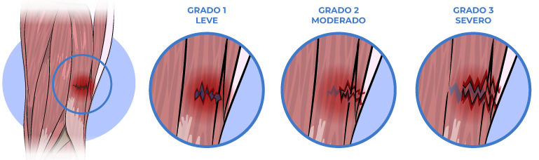
¿Cómo prevenirlo?
Para prevenir un desgarro de isquiotibiales es importante mantener una buena condición física y un equilibrio muscular adecuado. También es fundamental calentar bien antes de hacer ejercicio y realizar estiramientos al finalizar la actividad. Además, llevar una buena alimentación y mantenerse hidratado ayuda a reducir el riesgo de este tipo de lesiones. También puedes seguir estas recomendaciones para evitar sufrir esta lesión:
Tratamiento inicial
En los primeros momentos después de un desgarre de isquiotibiales es
importante actuar rápido para evitar que la lesión empeore. Estos cuidados pueden ayudar, pero no
reemplazan la valoración de un médico, especialmente si el dolor es intenso.

Medicación
Los medicamentos pueden ayudar a aliviar el dolor y la inflamación. Tomar analgésicos que se venden sin receta médica, como pueden ser ibuprofeno y acetaminofén. No tome más que la cantidad recomendada en el envase o más que lo que su proveedor le aconseje tomar, pero si el dolor no mejora, se debe consultar a un médico.
Retorno a la actividad física tras un desgarro de isquiotibiales
El regreso a la actividad física después de un desgarre muscular debe hacerse de forma progresiva y controlada para evitar recaídas, además que depende de la gravedad de la lesión. En casos leves, la recuperación puede tomar alrededor de 10 días, mientras que en lesiones más graves puede extenderse hasta 8 semanas o más. Es muy importante no volver a la actividad física sin la autorización de un médico, ya que regresar antes de tiempo puede aumentar el riesgo de recaída. Además es importante tomar en cuenta que si el músculo no recupera completamente su elasticidad y fuerza, las probabilidades de sufrir una nueva lesión son mayores.
Tendinitis rotuliana
La tendinitis rotuliana es la inflamación de un tendón, que es la estructura que conecta el músculo con el hueso.
Este tipo de lesion causa dolor y sensibilidad justo afuera de la articulación. La tendinitis puede ocurrir en cualquier tendón pero
es más frecuente alrededor de los hombros, codos, muñecas, rodillas y talones. En el fútbol aparece por el uso repetitivo de ciertas zonas del cuerpo,
como la rodilla o el tobillo y si no se trata, con el tiempo esta sobrecarga puede causar un desgarro, lo cual puede necesitar de una cirugía.
¿Porque puede ocurrir?
La tendinitis suele producirse por movimientos repetitivos, sobrecarga o falta de descanso. En el fútbol aparece al correr, saltar o patear el balón de forma constante, lo que genera un estrés continuo en los tendones. Además acciones como saltar, caer y cambiar de dirección repetidamente pueden provocar daño en el tendón, especialmente en la rodilla.
Síntomas
El síntoma principal de la tendinitis rotuliana es el dolor en la rodilla, que generalmente se presenta entre la rótula y la zona donde el tendón se une a esta. Al inicio, el dolor puede aparecer solo durante la actividad física o después de un esfuerzo intenso. Sin embargo, con el tiempo puede aumentar y comenzar a afectar el rendimiento deportivo e incluso actividades cotidianas como subir escaleras o levantarse de una silla.
Este dolor puede variar desde una molestia leve hasta un dolor más intenso debajo de la rótula. Además, suele empeorar al realizar ciertas acciones como correr, saltar, subir o bajar escaleras, o al moverse en superficies inclinadas.
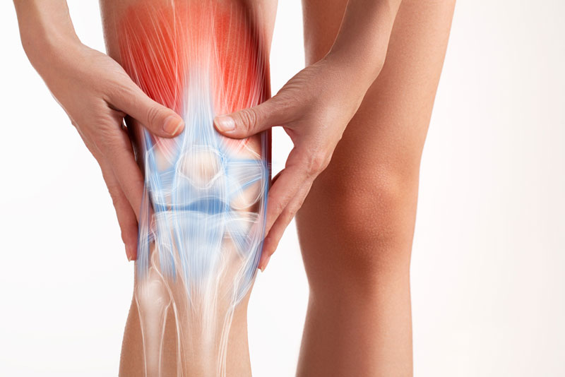
¿Qué tan grave puede ser? (Etapas de la tendinitis)
La tendinitis rotuliana no se clasifica en tipos, sino en diferentes etapas según la intensidad del dolor y el nivel de afectación del tendón. Estas etapas permiten entender qué tan avanzada está la lesión y cómo puede afectar al rendimiento físico.
- Fase 1: El dolor aparece solo después de realizar actividad física intensa.
- Fase 2: El dolor se presenta durante y después del ejercicio, pero aún es posible continuar con la actividad.
- Fase 3: El dolor es constante y comienza a afectar el rendimiento deportivo.
- Fase 4: Ocurre una lesión más grave, como la rotura del tendón, lo que impide realizar actividad física.
¿Cómo prevenirlo?
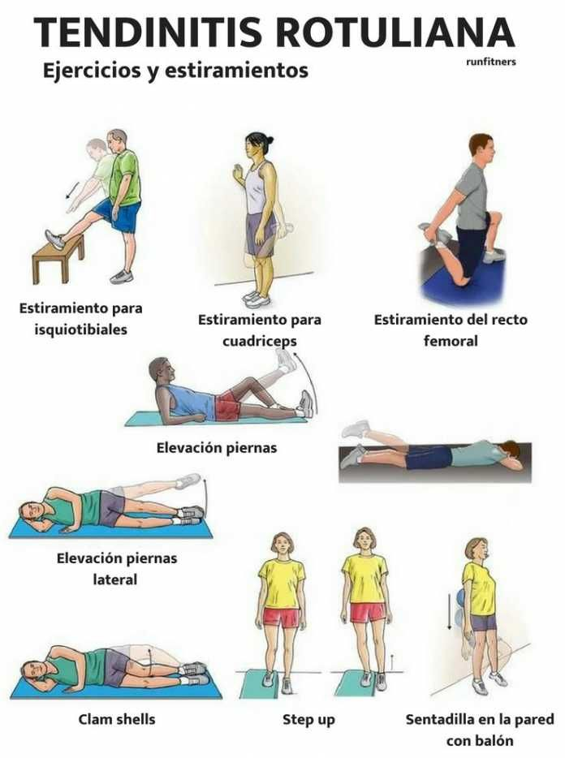
Tratamiento inicial
Cuando aparece dolor en la rodilla, es importante actuar rápido para evitar que la lesión empeore.
Se recomienda reducir o detener la actividad física y descansar la zona afectada. Aplicar hielo varias veces al día puede ayudar
a disminuir el dolor y la inflamación.
También es importante evitar movimientos que causen dolor como saltar o correr. En algunos casos se puede usar una venda o soporte en la rodilla para reducir la tensión en el tendón. Si el dolor continúa o empeora es obligatoria acudir a un profesional de salud para una evaluación adecuada.
Medicación
En algunos casos se pueden usar medicamentos para aliviar el dolor y la inflamación, como Ibuprofeno o paracetamol, pero estos deben usarse solo cuando sea necesario y respetando la dosis recomendada. No se recomienda automedicarse ni abusar de estos medicamentos y si el dolor continúa es necesario acudir a un médico.
Retorno a la actividad física tras una tendinitis rotuliana
El regreso a la actividad física debe hacerse de forma progresiva y solo cuando el dolor haya desaparecido y la rodilla recupere su movilidad normal. Es muy importante no volver a jugar sin la autorización de un médico porque hacerlo antes de tiempo puede empeorar la lesión o provocar una que la lesión empeore. En algunos casos puede ser necesario realizar ejercicios de rehabilitación antes de retomar el deporte, pero eso dependera de lo que diga tu medico
Calambres
Los calambres son contracciones musculares involuntarias que aparecen de forma repentina pero que causan un dolor intenso.
Hacer ejercicio o hacer un esfuerzo importante sobre todo cuando hace calor, puede resultar en calambres musculares.
En el fútbol es común, especialmente en las piernas, además de que suele pasar durante o después del esfuerzo físico, esto se da por la fatiga o falta de hidratación.
Aunque duran poco tiempo pueden afectar el rendimiento del jugador en el partido o entrenamiento.
¿Porque puede ocurrir?
Los calambres musculares suelen aparecer cuando el músculo se sobrecarga o se fatiga. También pueden ocurrir si el cuerpo no está bien hidratado o si hay falta de minerales como sodio, potasio o calcio. En el fútbol, es común que aparezcan después de correr durante mucho tiempo, exigir demasiado al cuerpo o no hidratarse correctamente.
Síntomas
En el fútbol los calambres musculares generalmente ocurren en los músculos de la pierna y la mayoría de las veces en las pantorrillas. Los calambres suelen durar algunos segundos o minutos. Una vez que se haya aliviado, es posible que el área quede dolorida y un poco riguida por algunas horas o días.
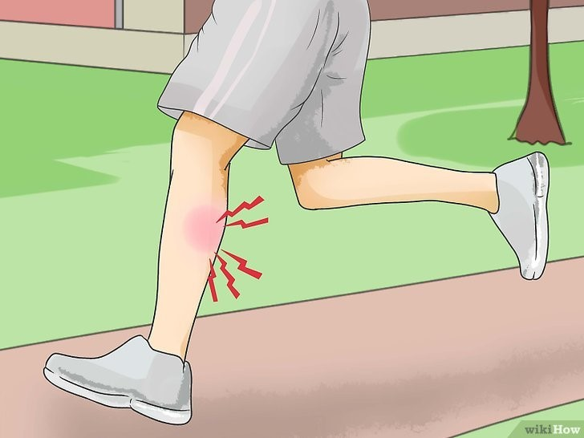
Los calambres musculares suelen durar poco tiempo, normalmente solo unos segundos o minutos. Aunque el dolor puede ser intenso en el momento, el músculo suele volver a la normalidad después de un tiempo. En algunos casos puede quedar una ligera molestia o sensibilidad durante un tiempo, pero un calambre muscular no es una lesión de larga duración.
¿Cómo prevenirlo?
Para prevenir los calambres es importante mantenerse bien hidratado antes,
durante y después de la actividad física. También se recomienda calentar correctamente, estirar los músculos
y evitar el exceso de esfuerzo. Mantener una buena alimentación ayuda a evitar la falta de minerales.
También puedes seguir estas recomendaciones:
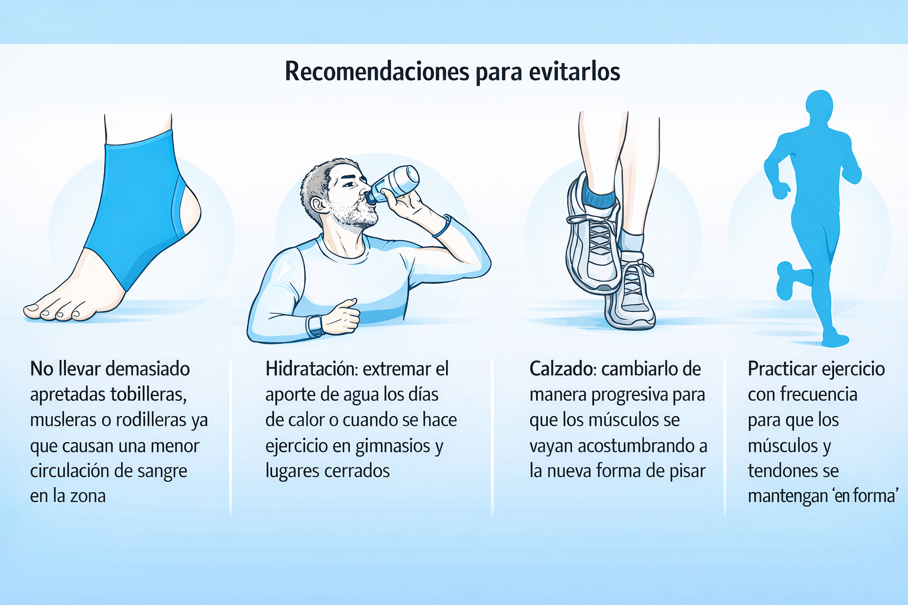
¿Qué hacer en el momento?
Si aparece un calambre durante la actividad física lo primero que hay que hacer es detenerse y no seguir forzando el músculo. Se recomienda estirar suavemente la zona afectada hasta que el dolor disminuya y también masajear el músculo para ayudar a que se relaje. Además es importante hidratarse ya que la falta de líquidos puede provocar calambres.
Contución (golpe)
La contusión es una lesión causada por un golpe directo en en los tejidos blandos del cuerpo como puede ser la piel, músculos
y articulaciones.
En el fútbol es muy común debido al contacto entre jugadores o impactos con el balón.
Dependiendo de la intensidad del golpe la contusión puede ser leve o más severa, llegando incluso a dificultar el movimiento en el área del golpe.
Aunque generalmente no es una lesión grave es importante tratarla correctamente para evitar que escale a una lesion mas compleja.
¿Porque puede ocurrir?
Las contuciones principalmente suelen producirse por un impacto fuerte o un golpe directo en el cuerpo que resulta en un daño en el tejido impactado. En el fútbol suele producirse por golpes directos durante el juego, como choques con otros jugadores, caídas al suelo o impactos fuertes con el balón.
¿Cuáles son los síntomas?
Aunque las contusiones suelen considerarse lesiones simples, no todas son
iguales pueden clasificarse de diversas maneras, según la gravedad de la
lesión o la ubicación del impacto
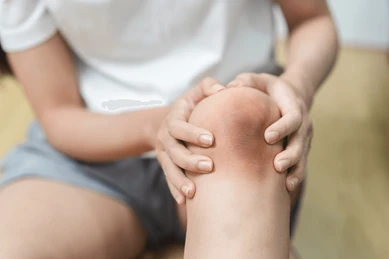
¿Cuáles son los tipos de contusiones?
Según la gravedad:
-
Contusión leve
-
Contusión moderada
-
Contusión grave
Es un golpe superficial, que provoca enrojecimiento en la piel que no tiene mayores complicaciones. Generalmente no afecta el movimiento y mejora en pocos días.
Ocurren por un golpe de mediana intensidad, que provoca inflamación visible y forman un hematoma y un edema o hinchazón moderada.
Es un golpe fuerte que afecta el tejido subcutáneo, los músculos y en ocasiones pueden afectar los nervios e incluso los huesos. Causa dolor intenso, mucha inflamación, y limitación casi total del movimiento.
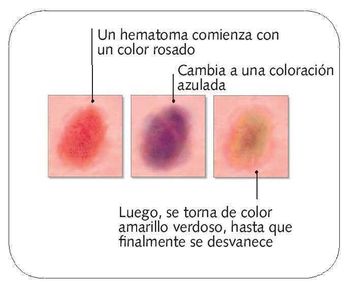
IMPORTANTE
Si el hematoma no sigue este proceso de cambio de color, aumenta de tamaño o causa mucho dolor, es recomendable acudir a un médico.
Según la zona:
Las contusiones también pueden clasificarse según la parte del cuerpo afectada. Las más comunes son las contusiones superficiales (moretones en la piel), musculares (afectan el músculo) y óseas (cuando el golpe es más profundo). En el fútbol, las más frecuentes son las musculares debido a los choques entre jugadores.

¿Cómo prevenirlo?
Para reducir el riesgo de contusiones en el fútbol es importante usar canilleras, y mantener una buena técnica de juego para evitar choques innecesarios. También ayuda estar atento durante el juego y fortalecer el cuerpo para resistir mejor los impactos.
Tratamiento inicial
Si ocurre una contusión lo primero que hay que hacer es detener la actividad física.
Se recomienda mantener el área en reposo, aplicar hielo durante 15–20
minutos varias veces al día puede ayudar a reducir el dolor y la hinchazón.
Es importante no presionarlo, ya que el cuerpo suele absorberlo de forma natural con el tiempo.
En caso de dolor se pueden usar analgésicos como paracetamol o Ibuprofeno, pero si el dolor es muy intenso, el golpe fue fuerte o la molestia no mejora con el paso de los días, es recomendable acudir a un profesional de salud para
descartar una lesión más grave.
¿Cuándo volver a jugar?
Se puede volver a la actividad física cuando el dolor haya disminuido y se recupere el movimiento normal. Si la contusión es fuerte o limita el movimiento es importante acudir a un profesional de salud y no regresar al juego sin su autorización.
Pubalgia
La pubalgia es una inflamación que provoca dolor en la zona del pubis, la parte baja del abdomen y aductores.
Este tipo de dolor suele empeorar con movimientos bruscos, giros o incluso al toser.
Es frecuente en futbolistas, ya que el fútbol es un deporte que exige movimientos repetitivos como patear, girar constantemente y
realizar cambios de dirección rápidos, lo que genera una sobrecarga mecánica en la zona del pubis.
Debido a esto, el esfuerzo constante puede afectar los músculos y tendones de esa área. A pesar de que suele desarrollarse poco a poco
si no se trata adecuadamente, puede volverse una lesión crónica y afectar el rendimiento del jugador.
¿Porque puede ocurrir?
La pubalgia suele aparecer por el uso excesivo de los músculos de la ingle y el abdomen. En el fútbol se producirse por movimientos repetitivos, cambios bruscos de dirección o giros.
¿Cuáles son los síntomas?
Además, el dolor de la pubalgia puede comenzar de forma leve y aparecer solo durante
la actividad física, pero si no se trata a tiempo puede volverse más intenso y constante.
En algunos casos, la molestia puede sentirse incluso en reposo y afectar movimientos diarios.
Por eso, es importante no ignorar los primeros síntomas, ya que la lesión puede empeorar
y afectar
el rendimiento deportivo.
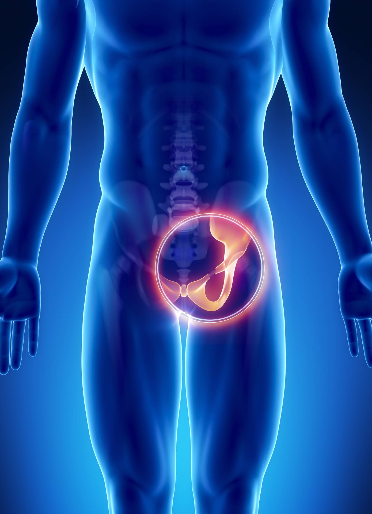
¿Cómo prevenirlo?
Para prevenir la pubalgia es importante mantener un buen equilibrio muscular entre el abdomen y las piernas.
También se recomienda calentar antes de jugar, estirar después del ejercicio y evitar el sobreentrenamiento. Fortalecer la zona abdominal
y los músculos de la ingle ayuda a reducir el riesgo.
También puedes seguir estas recomendaciones:
¿Qué hacer en el momento?
Si aparece dolor en la zona del pubis o la ingle, se recomienda detener la actividad física y evitar movimientos que causen molestia. Es importante descansar la zona afectada y aplicar hielo para reducir el dolor. También se debe evitar seguir jugando con dolor, ya que la lesión puede empeorar.
¿Cuándo volver a jugar?
Se puede volver a la actividad física cuando el dolor haya disminuido y se recupere el movimiento normal. Si la contusión es fuerte o limita el movimiento es importante acudir a un profesional de salud y no regresar al juego sin su autorización. El regreso a la actividad física debe ser progresivo y solo cuando el dolor haya desaparecido completamente. No se debe volver a jugar sin la autorización de un médico, ya que la pubalgia puede volverse crónica si no se trata correctamente. En muchos casos, es necesario realizar ejercicios de rehabilitación antes de volver al deporte.
Fuentes Bibliográficas
Pubalgia
- Moreno, D. (2025, 21 de diciembre). Pubalgia: qué es, síntomas, causas y tratamiento efectivo para deportistas y personas activas. Clínica de Lesiones Deportivas. https://clinicadelesionesdeportivas.com/salud/pubalgia-que-es/
- Jódar, J. (s. f.). La prevención de la pubalgia en el fútbol. https://jordijodarcomas.blogspot.com/2013/07/la-prevencion-de-la-pubalgia-en-el.html
- García, L., & García, L. (2025, 18 de marzo). Pubalgia. Corporis Fisioterapia - Marbella. https://corporisfisioterapia.com/lesiones/pubalgia/
- Baraia, A. (2024, 29 de mayo). Pubalgia en el fútbol. LinkedIn. https://es.linkedin.com/posts/aitor-baraia-9571986a_pubalgia-en-el-f%C3%BAtbol-ejercicios-preventivos-activity-7201622548101419008-hx8v
Contución
- Web, R. (2020, 26 de septiembre). ¿Qué hacer en caso de contusiones?. El Men. https://elmen.pe/que-hacer-en-caso-de-contusiones/#google_vignette
- Sanitas. (2025, 16 de abril). Contusiones: tipos y tratamientos. Sanitas. https://www.sanitas.es/biblioteca-de-salud/Lesiones/traumatismo/contusion
- Clínica Universidad de los Andes. (s. f.). Contusiones. Uandes. Recuperado el 19 de mayo de 2026, de https://www.clinicauandes.cl/medicos-y-especialidades/diccionario-medico/detalle-glosario/contusiones
Calambres
- Calambres musculares: MedlinePlus enciclopedia médica. (s. f.). https://medlineplus.gov/spanish/ency/article/003193.htm
- Aranda, P. (2018, 12 de noviembre). Calambres musculares: consejos para evitarlos. Imq.es. https://canalsalud.imq.es/blog/calambres-musculares
- Calambre muscular. (s. f.). Mayo Clinic. Recuperado el 19 de mayo de 2026, de https://www.mayoclinic.org/es/diseases-conditions/muscle-cramp/symptoms-causes/syc-20350820
Tendinitis rotuliana
- Rodilla del saltador o tendinitis rotuliana. (s. f.). https://clinicayecla.es/salud/rodilla-del-saltador-o-tendinitis-rotuliana/
- Sastre, S. (2023, 7 de noviembre). Tendinitis rotuliana: qué es, síntomas, causas, evolución y tratamiento. Blog de Traumatología Deportiva. https://www.barnaclinic.com/blog/traumatologia-deportiva/2021/05/27/tendinitis-rotuliana/
- Tendinitis. (s. f.). Mayo Clinic. Recuperado el 20 de mayo de 2026, de https://www.mayoclinic.org/es/diseases-conditions/tendinitis/symptoms-causes/syc-20378243
- Tendinitis rotuliana. (s. f.). Mayo Clinic. Recuperado el 20 de mayo de 2026, de https://www.mayoclinic.org/es/diseases-conditions/patellar-tendinitis/symptoms-causes/syc-20376113
- ¿Qué es la rodilla de saltador y por qué es importante tratarla?. (s. f.). https://clinicafixen.com/rodilla-de-saltador-tratamiento/
Desgarre de isquiotibiales
- Sohail. (2023, 29 de septiembre). Desgarro muscular: tratamiento y recuperación. Clínica Sohail. https://clinicasohail.com/desgarro-muscular-tratamiento-y-recuperacion/
- Momico. (2026, 7 de abril). Causas y prevención de lesiones isquiotibiales en futbolistas. Viten. https://vitalclinic.es/lesiones-isquiotibiales/#Causas_de_las_lesiones_Isquiotibiales
- Lesión en los músculos isquiotibiales. (s. f.). Mayo Clinic. Recuperado el 20 de mayo de 2026, de https://www.mayoclinic.org/es/diseases-conditions/hamstring-injury/diagnosis-treatment/drc-20372990
- Distensión de isquiotibiales (para adolescentes). (s. f.). Nemours KidsHealth. https://kidshealth.org/es/teens/hamstring-strain.html
- Meds. (2023, 6 de marzo). Desgarro muscular. Clínica MEDS. https://www.meds.cl/desgarro-muscular/
- Distensión muscular: MedlinePlus enciclopedia médica. (s. f.). https://medlineplus.gov/spanish/ency/article/000042.htm
Esguince de tobillo
- Atención postratamiento para el esguince de tobillo: MedlinePlus enciclopedia médica. (s. f.). https://medlineplus.gov/spanish/ency/patientinstructions/000574.htm
- Esguinces de tobillo (para adolescentes). (s. f.). Nemours KidsHealth. https://kidshealth.org/es/teens/ankle-sprains.html
- Esguince de tobillo. (s. f.). Mayo Clinic. Recuperado el 20 de mayo de 2026, de https://www.mayoclinic.org/es/diseases-conditions/sprained-ankle/symptoms-causes/syc-20353225
- Clinic, R. (2024, 18 de diciembre). Jugar al fútbol después de un esguince de tobillo. Fisioterapia Rekovery Clinic Deporte y Cuidados. https://rekoveryclinic.com/jugar-al-futbol-despues-de-un-esguince-de-tobillo/
- Cleveland Clinic. (2025, 30 de junio). RICE method for injury. https://my.clevelandclinic.org/health/treatments/rice-method